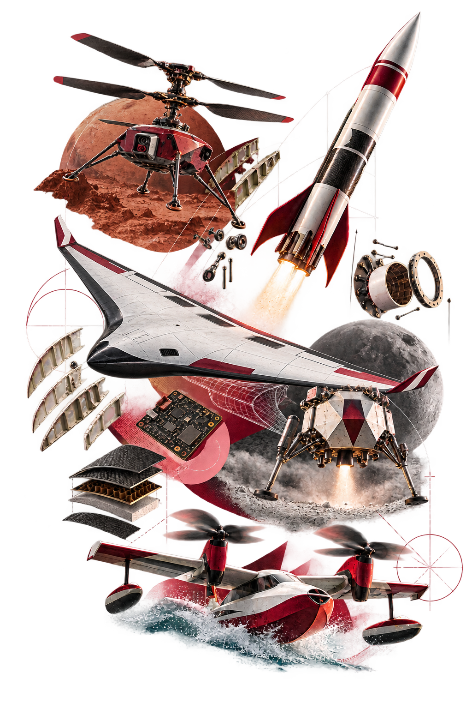

Capstone archive / Academic years 2023—2025
Aerospace Capstone
Project Showcase
The Aerospace Capstone Project is the final-year design experience where student teams apply aerodynamics, structures, propulsion, flight systems and engineering analysis to ambitious aircraft and spacecraft challenges. This archive presents their concepts, prototypes, results and next steps.
Explore missions
15 projects / 3 academic years

Flight deck / 01
Select a mission
Select an academic year, filter by mission environment or search across project names, systems and objectives.
Academic year
15 projects in view
NO SIGNAL
No missions matched that search.
Engineering record / 02
Concepts with context.
These pages distinguish requirements, calculations, simulations and experimental measurements. Each mission record connects the design intent to reported evidence and identifies what remains to be validated.